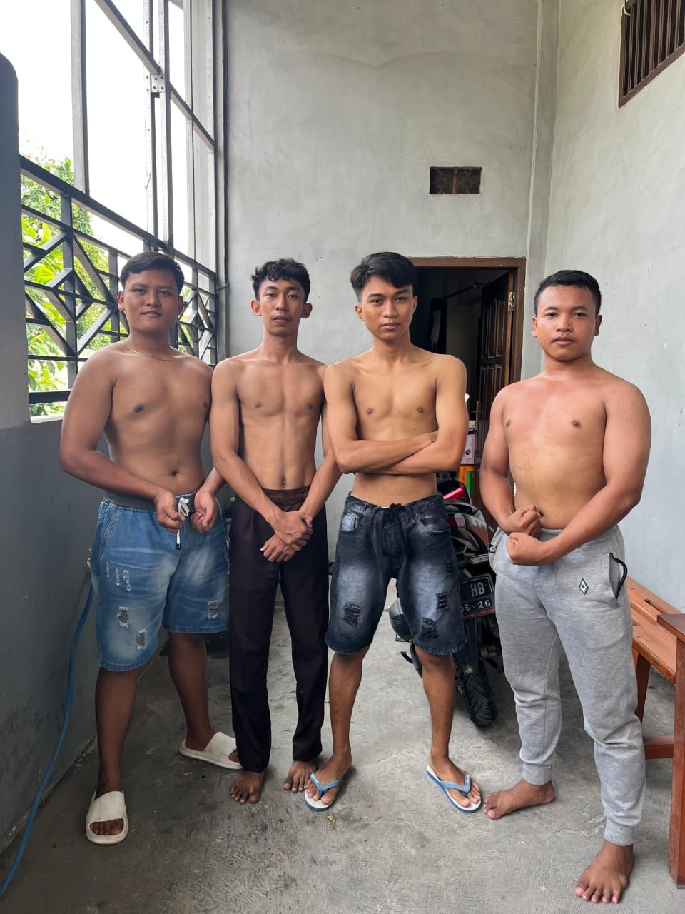
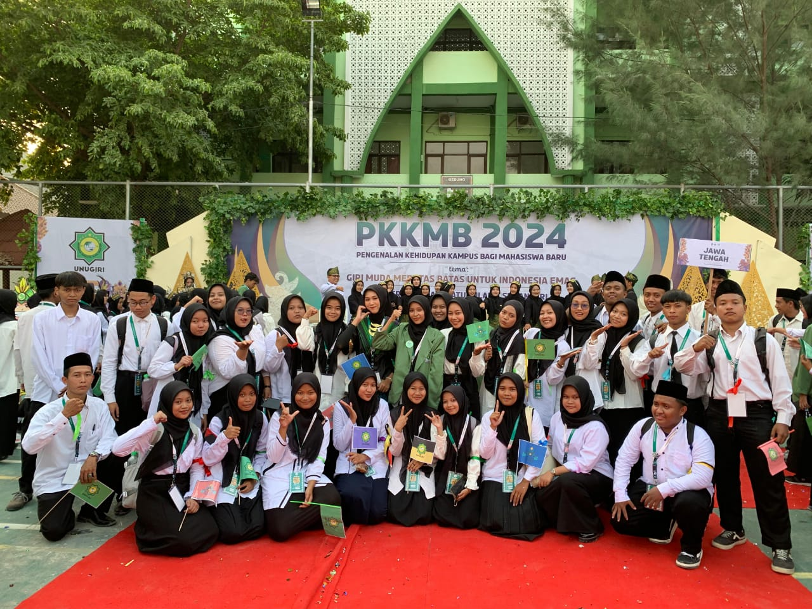

PORTOFOLIO
| No | Nama Kegiatan | Waktu Kegiatan | Bukti kegiatan |
|---|---|---|---|
| 1 | Peserta IT Camp | 21 - 22 Desember 2024 |

|
| 2 | GYM | 23 November 2024 |
 |
| 3 | PKKMB UNUGIRI 2024 | 2-4 September 2024 |
 |